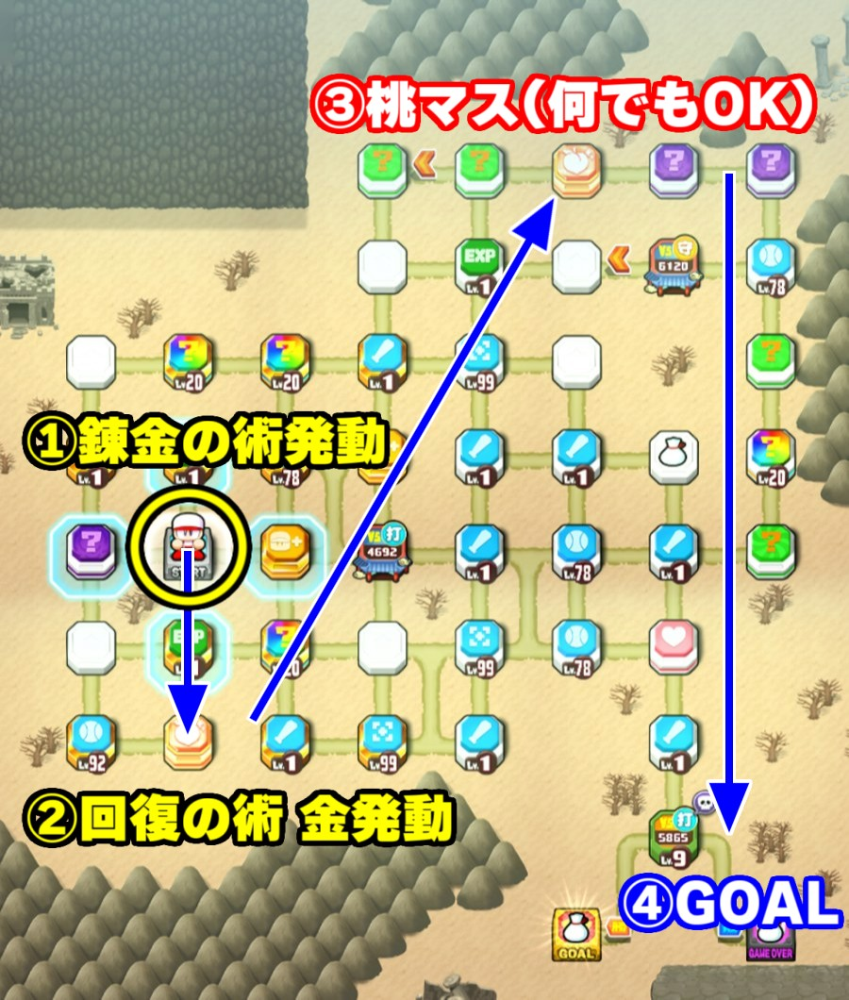
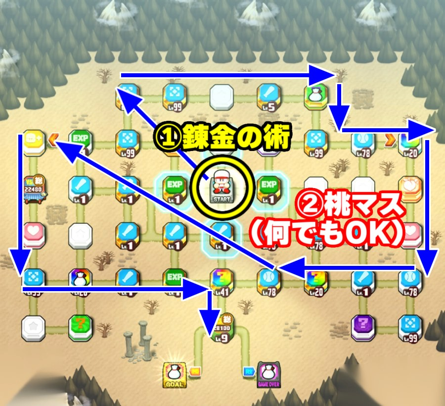
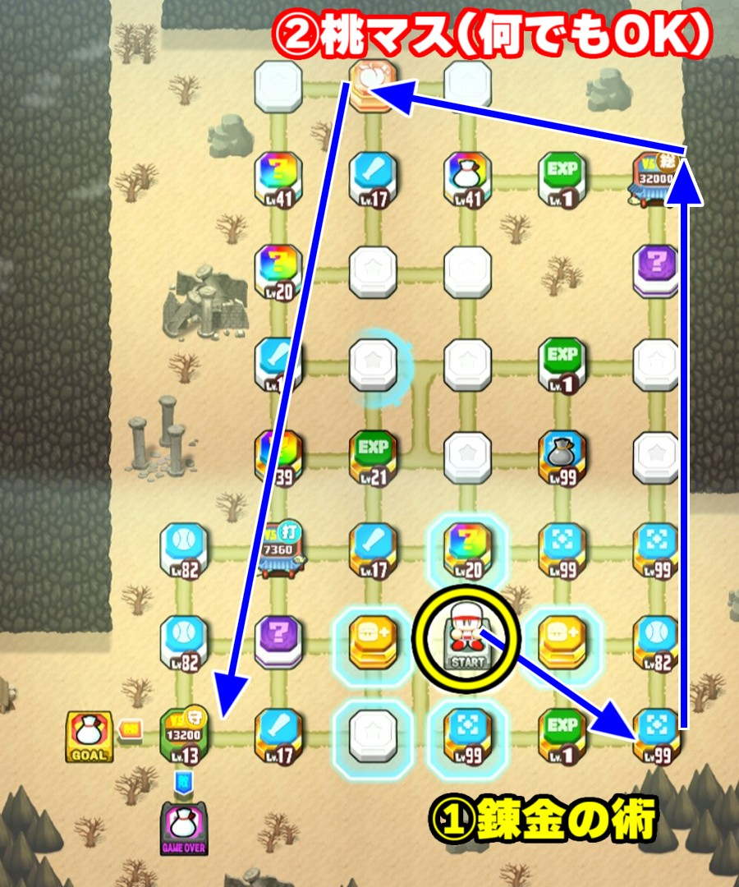
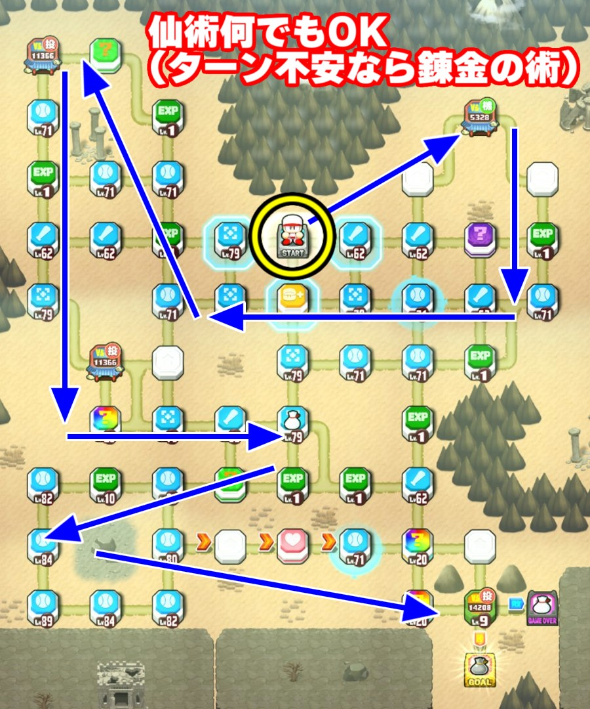
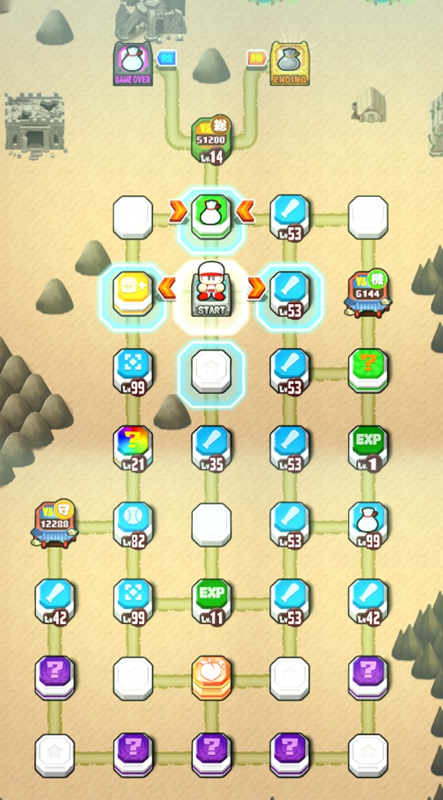

パワクエ 西球記
むちゃクエ攻略＆周回
パワクエ「西球記（さいきゅうき）」のむちゃクエを、エリアごとのルートと使う仙術で解説します。
マップの形はエリア5以外は固定です。マスの種類は毎回変化しますが、一部固定のものがあります。
デッキ必須アイテム
【金ノ書】
マップの形状から回復の術 金と錬金の術によるコンボでターン回復を非常に狙いやすいため、周回でもチームランク更新狙いでも重要になります。
必ず持ち込みましょう！
エリア1

スタートしたら錬金の術を発動して、周辺のマスを金マス化します。
2マス下の桃マスに行き、回復の術 金を発動しましょう。
これでかなりターンに余裕を持って進める事が可能となります。
金マスを極力踏みながらマップ上の桃マスを通り、神前試合もこなしながらゴールへ向かいましょう。
エリア2

スタートしたら錬金の術を発動して、周辺のマスを金マス化します。
左上・右上は一方通行となっているので注意しましょう。
左右どちらかに桃マスがあります。ターン回復は金マスだけでも足りるので好きな仙術を使って構いません。
エリア3

スタートしたら錬金の術を発動して、周辺のマスを金マス化します。
右下から時計回りに回って、マップ上の神前試合マス・桃マスを通ります。
エリア4

スタート時にターン数が50程度残っていれば、錬金の術を使わなくてもターンが足りる可能性が高いです。ターンに不安なら錬金の術を使いましょう。
エリア5

このエリアだけはマップの形がプレイ毎に変わるので注意が必要です。
一方通行になっている場所が複数存在するのでターン計算を間違えないように注意しましょう。
西球記の攻略ページ
 重要アイテム一覧※11/25更新!
重要アイテム一覧※11/25更新!
 神前試合まとめ※11/19更新!38校の進化対象・
神前試合まとめ※11/19更新!38校の進化対象・ 虹特の査定まとめ※11/24更新!17種類の査定と
虹特の査定まとめ※11/24更新!17種類の査定と ミッション報酬西球記の105件を
ミッション報酬西球記の105件を西球記のクエスト・周回ページ
 クエスト一覧※11/25更新!①〜⑳・むずクエ・むちゃクエの
クエスト一覧※11/25更新!①〜⑳・むずクエ・むちゃクエの ⑫旅は続く周回※11/24更新!
⑫旅は続く周回※11/24更新!
 ⑱道中2周回※11/24更新!
⑱道中2周回※11/24更新!
 ⑲道中3周回※11/24更新!
⑲道中3周回※11/24更新!
 むずクエ攻略＆周回※11/24更新!エリアごとの
むずクエ攻略＆周回※11/24更新!エリアごとの むちゃクエ攻略＆周回エリアごとの
むちゃクエ攻略＆周回エリアごとの西球記の攻略（トップ）に戻る